Cronología de Obras
|
2005 |
|
"Megacity Blues" KEYWORDS: literatura, narrativa, cuentos breves... Este libro de cuentos breves ganó la beca de
creación literaria "El Caballo de Coral". Aunque nunca se publicó
íntegramente, alguno de los relatos que lo componen han visto la luz
posteriormente, otros han pasado (sufriendo cambios) a formar parte de
otras obras en Internet. Los textos abordan la subjetividad de una
generación, que llegó a la adolescencia y a la mayoría de edad durante
el "Período Especial", agobiada no sólo por la crisis económica, sino
también por una crisis de sentido. |
|
2006 |
|
"Intérlope" KEYWORDS: literatura, narrativa, cuentos breves... Esta pieza consiste en un telegrama que se
envió al concurso de cuentos cortos "Dinosaurio". El mensaje informaba
que el relato del autor, se había perdido durante su tramitación en la
oficina de correos, y estaba firmado por un funcionario de la sucursal
desde donde se enviaba. El texto del telegrama era el siguiente:
"Lamentamos mucho informar que el cuento titulado Tautología, bajo el
seudónimo de Sileno, se ha extraviado en nuestra sucursal. Les rogamos
nos perdonen; y de ser posible concedan una prórroga a este
concursante, que por intermedio nuestro, y en la mayor brevedad,
enviará de nuevo su obra". Con esta operación el autor proponía un
deslizamiento de la narración, que pasaba del cuento (nunca escrito) al
autor mismo, y sus supuestas desventuras. |
|
"Papeles Sucios" (ver obra)
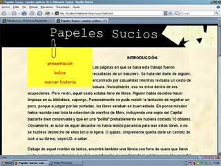 KEYWORDS: ciberliteratura, literatura hipertextual, narrativa digital, literatura erótica, fotografía erótica, interactividad, obra colaborativa, arte en la red...Una serie de cuentos eróticos escritos para la red. Los textos están acompañados por música, escrita a cuatro manos con Yamiel Suarez, fotografías de José Estuardo, y una serie de mentiras que aparecen en ventanas emergentes, obra de Nelson Mulet. El uso de algunos recursos propios de la Internet, como las notas que se abren gracias a la interacción del usuario, los saca del mundo impreso y los ubica dentro de la literatura digital. |
|
"Apariciones" (ver obra)
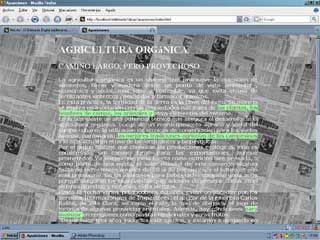 KEYWORDS: Net.Art, interactividad, apropiación... Se trata de una página Web donde se
reproduce un artículo de Bohemia. Al pasar el mouse sobre el texto, se
resaltan algunas partes del mismo. Esta obra intenta torpedear el
fetichismo de la letra impresa, la lectura rutinaria que hacemos de la
prensa y de sus supuestas verdades. Usando el recurso de visibilizar en
el texto original mensajes ocultos, se propone una lectura radicalmente
opuesta a la que el autor del artículo pretendió. |
|
2007 |
|
"HDD" Esta obra consiste en un disco duro,
acompañado por una nota, que se envió al concurso "Dinosaurio". Si bien
la nota resalta cierta incompatibilidad que hay entre el discurso
tradicional y la realidad digital (mientras en los concursos exigen
original y dos copias, en el mundo digital no existen tales objetos),
la obra en sí misma discursa sobre los prejuicios y dogmas mentales que
subsisten en el mundo intelectual, respecto a las nuevas tecnologías.
El comportamiento provocado en los especialistas que recibieron, y
abrieron luego el sobre, es parte de este experimento social. La
narración de esta obra delataba (más allá del juego y el engaño) la
aventura cuasi-metafísica de los textos contemporáneos, frente a la
necesidad de mudar su soporte, y sus repercusiones en la mentalidad. El
texto que acompañaba al disco duro era el siguiente: "Ya que se
requiere de mí el original del cuento les entrego el disco duro.
Descanso en vuestra bondad para reproducirlo un par de veces. Eso sí,
me he tomado el trabajo de imprimir esta nota tres veces." |
|
"Mapa para una Historia" (ver obra) 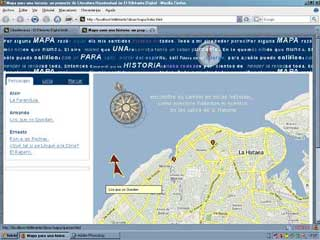 KEYWORDS: literatura hipertextual, ciberliteratura, narrativa digital, epoetry, fotografía, video arte, arte ASCII, arte en la red, interactividad, obra colaborativa, work in progress...Esta obra de ciberliteratura es un esfuerzo colaborativo de varios artistas (Yamiel Suarez, Pedro Peña, Sergio L. Seiglie, Ana L. Tamburini, Jose Estuardo) y apunta a crear un hipertexto, donde se combinen de manera orgánica cuentos, música, fotografía y video. Los textos pueden explorarse de varias maneras, ya sea siguiendo a los protagonistas, o haciendo click en determinadas zonas del mapa de Ciudad Habana, lectura esta que persigue desplegar las formas de vida y la mentalidad de sus habitantes. |
|
"Yonky" (ver obra) 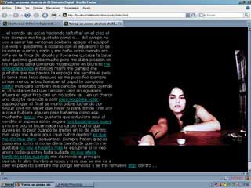 KEYWORDS: ciberliteratura, narrativa digital, epoetry, obra colaborativa, aleatoriedad, arte en la red...La pieza refleja el monólogo de una joven, mientras se prepara y consume drogas intravenosas. El texto es acompañado por una secuencia animada de fotos tomadas por José Estuardo. Las oraciones se reorganizan de manera aleatora, cada vez que se accede a la página, y cada 15 segundos. De forma que el lector nunca lee el mismo texto dos veces. Estos cambios constantes reflejan el estado de confusión que se haya la protagonista del monólogo. Esta pieza fue creada a partir de una idea del escritor Raúl Aguiar. |
|
2008 |
|
"Paisaje Zen" (ver obra) 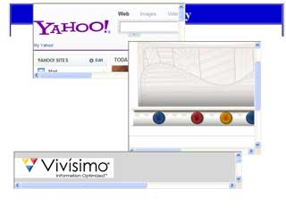 KEYWORDS: Net.Art, interactividad, apropiación..En esta obra se combina la visualidad de tres de los buscadores más conocidos de Internet. Sobre el fondo de una página Web en blanco, se disponen tres marcos con Yahoo!, Google, y Vivisimo respectivamente, dispuestos espacialmente a la usanza de los paisajes orientales. En estos dibujos, lo que parece discontinuo y desordenado a un occidental, está conectado por un origen común, representado por el vacío, del que emanan los contrarios. La Internet puede leerse en esa clave. Como un gran espacio amorfo, discreto e indefinido, de donde emergen todos los contrarios del universo simbólico del hombre. La composición de los buscadores abre paso a la abstracción total, verdaderos vórtices al alma de la humanidad. |
|
"Window$ crash so often app" (ver obra) 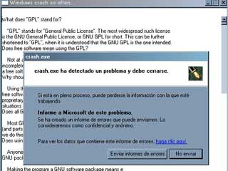 KEYWORDS: software art, apropiación...Una aplicación defectuosa que aprovecha un bug en las API de Window$. Una aplicación que no hace nada cuya funcionalidad misma es no funcionar en lo absoluto. A una orden del espectador se bloquea y hace crash. Acompaña a la obra la licencia de GNU, que se muestra en la ventana de la aplicación. La pieza es una crítica al mercado y al software de propietario, oponiéndole el movimiento del software libre. |
|
"Oscuridad Subjetiva" (ver obra) 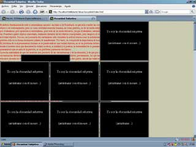 KEYWORDS: Net.Art, interactividad, apropiación...La obra consiste en una página Web con un texto de Karl Marx. A los pocos segundos la lectura queda interrumpida por un grupo de capas negras, que se entrometen constantemente entre el texto y el espectador. Estas capas oscuras pueden ser arrastrads con el Mouse, pero retornan a su lugar en poco tiempo. De esta forma el artista representa al propio espectador cargado de prejuicios, ideas preconcebidas y limitaciones, que le impiden desentrañar el sentido del texto. En general, la obra persigue crear una imagen visual como alegoría a las dificultades de la interpretación. |
|
"Sepermuta" (ver obra) KEYWORDS: Net.Art, interactividad, apropiación, intervención... Una apropiación de una lista de correos muy frecuentada, y su consecuente redefinición como obra de arte. El artista se volvió administrador de la lista hackeando la clave, apropiándosela así informáticamente. A los usuarios de la misma se les advirtió, con un email, sobre el cambio de proposito de la lista, ahora redefinida como obra de arte colaborativa. Al hacerlo, pretende destacar la fina línea que existe entre una obra institucionalizada y una obra espontánea. |
|
"Homogéneos" (ver obra) 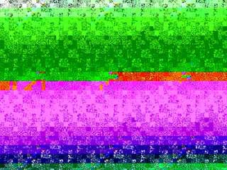 KEYWORDS: hacker art, apropiación...Esta imagen fue construida con un texto, o sea, el texto se encuentra en el cuerpo de la imagen como información de color. Es una pieza recursiva, pues la explicación de cómo hacer obra está dentro de la propia imagen. Puede descargarla en el vínculo de arriba, y abrirla con un editor de texto como el notepad. La operación delata la radical equivalencia del texto y los colores en el medio digital, y la homogeneización que sufre toda la realidad al ser digitalizada, al pasar del universo continuo al discreto-digital. |
|
"Greca" (ver obra) 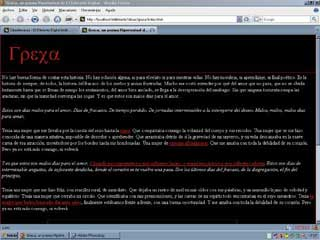 KEYWORDS: ciberliteratura, narrativa digital, epoetry, arte ASCII, aleatoriedad, arte en la red...Un poema de amor hipertextual. Escrito y diseñado después de una dolorosa separación. Desde el punto de vista formal, se trata de un texto en forma de grafo, que vincula de manera adisciplinar la literatura, la plástica y la música. Resume casi todas las técnicas expresivas que el artista ha desarrollado al abordar la narrativa hipertextual. Así como contiene sus primeros experimentos con el arte ASCII. |
|
"Invertida" (ver obra) 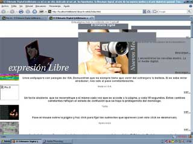 KEYWORDS: hacker art, intervención, work in progress, interactividad, obra colaborativa, apropiación...A raíz de la campaña en contra de los prejuicios que provoca la homofobia, se propone esta obra. Se trata de una aplicación que permite invertir línea a línea una página Web. El resultado es, además de impredecible, una página invertida. La pieza propone que los internautas detecten los sitios Web con contenido despectivo en contra los gays. A continuación, pueden descargar estos sitios e invertirlos. Si los envían al correo info@eldiletante.com, serán subidos a Internet para repudio del resto del mundo virtual. |
|
2009 |
|
"Heads & Bodies" (ver obra) 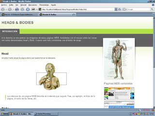 KEYWORDS: Net.Art, interactividad, apropiación...Una pieza de Net.Art que intenta hacer un símil entre el discurso de la WEB, a nivel de la programación, y la estructura de la sociedad: hace corresponder, la cabecera (head) con la estructura política y el cuerpo (body) con el tejido social mismo. La interface nos brinda las páginas de la OPEC, la ONU, la Casablanca, el PCC y Greenpeace. A petición del usuario se combinan la cabecera y el cuerpo de dos de estas páginas Web, y se muestra el resultado. Esta operación arroja páginas imposibles e inesperadas. |
|
"Sexy Machine" (ver obra) KEYWORDS: software art, interactividad, apropiación... 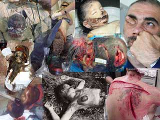 Una obra que evidencia la capacidad intrínseca de las PC para portar valores estéticos, y el disfrute que inadvertidamente tenemos de los mismos. A pesar de que muchos consideran las computadoras como simples herramientas, lo cierto es que nos sentamos frente a las mismas a disfrutar de sus encantos tanto como a trabajar. La pieza consiste en un programa que enfrenta al usuario con la pregunta "¿tienes una máquina sexy?" En de dependencia de la respuesta cambia el wallpaper por una imagen horrible. |
|
"Cómo ser Vuk Cosic en 3 Pasos Fáciles" (ver obra) 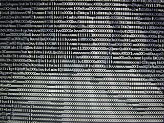 KEYWORDS: software art, arte ASCII, video arte, interactividad, apropiación...La pieza consiste en la imagen de un disco (un archivo .ISO) que contiene como sistema operativo la distribución Kitten GNU/Linux. La funcionalidad principal de esta versión de la distro, es reproducir automáticamente cualquier película que encuentre en el CD, transformando en tiempo real los fotogramas en imágenes ASCII. El espectador puede agregar sus propios videos a la imagen del disco. La referencia a Vuk Cosic se debe a que este artista realizó una operación similar en varias de sus obras. El título encierra una ironía con respecto al peso relativo de la técnica en el arte y su relación con una idea original. Esta pieza es resultado del Taller de Net.Art, que con el mismo nombre, tuvo lugar durante la X Bienal de la Habana en el ISA. |
|
"El Gran Hipnotizador" 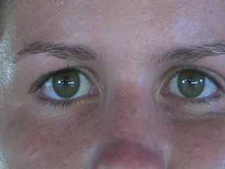 KEYWORDS: software art, arduino, video arte, interactividad...La pieza muestra aleatoriamente una imagen
de un buscador de Internet, o de un juego, o de la bandeja de correo,
tentando al espectador a sentarse frente a la PC. Si ocurre esto, la
imagen antes mencionada se cambia por un vídeo de dos ojos fijos que
intentan hipnotizar al usuario. La obra pretende evidencia la fuerza
con que la tecnología nos arroja fuera de nosotros mismos, y hacia los
objetos del mundo, arrebatándonos todo espacio para la introspección. |
|
"!Death" 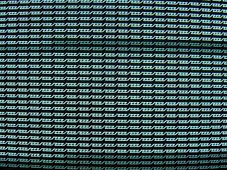 KEYWORDS: software art...La pieza consiste en un Live CD de la
distribución Kitten GNU/Linux, que al ejecutarse crea recursivamente
(anidadas una dentro de otra) carpetas con el nombre de "zzz". El
espectador ve el nombre de la ultima carpeta y su dirección dentro del
árbol de directorios. O sea, una secuencia como esta: "zzz", zzz/zzz",
"zzz/zzz/zzz", etc. El intento de crear estas carpetas hasta el
infinito resulta imposible, el sistema eventualmente se derrumba y
reinicia la máquina. La pieza discursa sobre la imposibilidad de
imaginar la infinitud de la muerte por medios analíticos. La
monstruosidad de la muerte, en parte, se debe a esta inmensidad que
supera nuestra imaginación y que no podemos concebir desde nuestra
limitada esencia. El nombre de las carpetas "zzz", es el signo visual
usado para expresar el acto de dormir, el orden anidado de las mismas
es un símil que propongo para la profundidad sin parangón del sueño
póstumo. |
|
"Superpoblación" 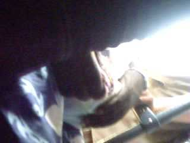 KEYWORDS: video arte, video experimental...Un video-arte filmado con la cámara a la
altura de la cintura, durante un viaje en guagua. Cuando la imagen se
oscurece, debido a la aglomeración de personas, se oye el sonido de una
respiración ahogada. Se buscó reforzar con la imagen de muy baja
calidad, el ambiente claustrofóbico. La pieza discursa sobre uno de los
problemas ecológicos más acuciantes de la actualidad: quizás seamos ya
muchos como para que el planeta tierra nos de sustento a todos, quizás
nuestra descontrolada reproducción ha roto definitivamente el
equilibrio de la naturaleza y nuestra simple presencia nos condene. |
|
2010 |
|
"Una Grieta en el Suelo es una Grieta en el Cielo" 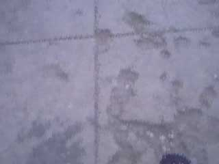 KEYWORDS: video arte, video experimental, arte ASCII...Un video de cien metros de acera completamente destruidos. La imagen se conforma progresivamente con la frase "Una Grieta en el Suelo es una Grieta en el Cielo". La idea apunta a que la indolencia con respecto al entorno no refleja otra cosa que la degradación moral. Esta es la metáfora que pretende desplegar en imágenes la pieza. |
|
"El Espejo que Nunca Miente (remake)" 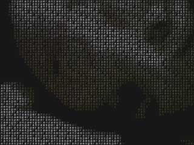 KEYWORDS: software art, arte ASCII...La obra aprovecha una webcam para construir, en tiempo real, una imagen del espectador, compuesta por las letras de la palabra "esperanza". Esta obra se basa en un grabado mexicano homónimo. Pero mientras el grabado nos recuerda que la muerte es el futuro fatal de todos, la pieza que aquí presentamos alude a que la esperanza y la fe, constituyen la esencia misma del alma humana. |
|
"R.E.M." 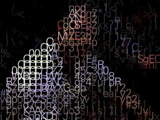 KEYWORDS: fotografía, street photography, arte ASCII...Una serie de fotografías meramente contemplativas, tomadas durante una Reunión de Estudios Militares (una movilización). Las fotos reflejan las posturas y lazos entre los soldados, que se establecen espontáneamente. Así como la inactividad a que se ven sometidos involuntariamente. Concebida bajo el paradigma de la Street Photography, esta serie de fotografías fue luego procesada con una aplicación (programada por el propio artista) para transformarlas en arte ASCII. Esto no supone ninguna discontinuidad en la intención creativa, pues desde el inicio se planeo este proceso. |
|
"Couple"
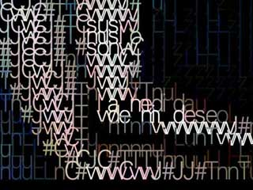 KEYWORDS: fotografía, arte ASCII, epoetry...Una serie de trece instantáneas tomadas a dos modelos, y luego procesadas con la técnica del ASCII art. Esta serie se inspira en la frase "Sus muslos son la medida de mi deseo" que se puede leer en el entramado de la foto a la izquierda. Las fotos pretenden reflejar la intimidad (sutilmente erótica) de dos mujeres que son pareja. Algunas imágenes incluyen versos, en un intento interdisciplinar por vincular la fotografía y la literatura. |
|
"Death all over us" 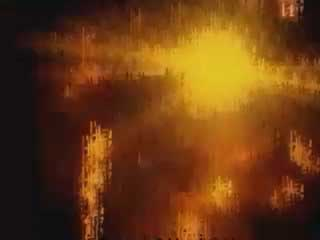 KEYWORDS: video arte, video experimental, arte ASCII...Un vídeo-arte que explora las imágenes de una guerra imposible, que nunca sucedió. Son imágenes que provienen de mis ensoñaciones diurnas, aquellas en las que las calles de la Habana se me revelan como ruinas post-bélicas. Después de medio siglo en pie de guerra, la ciudad finalmente parece como si hubiera sido bombardeada. Se trata de un video de arte ASCII, donde la frase que da título a la obra se usa para dar cuerpo a la imagen. Usando los letras que componen el título de la obra, se conforma la visualidad de la misma. |
|
"Con 50 mil dólares menos. O aprende a ser pobre, cabrón" 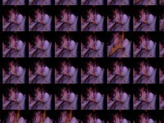 KEYWORDS: software art, arte ASCII...Una replica exacta de una pieza que supuestamente costó 50 mil dólares. La que se presenta bajo este título no costó nada y está hecha con materiales caseros: una webcam común, una PC del montón, y unos cuantos fotogramas de un film porno amateur. La pieza en cuestión consiste en un dispositivo que "copia" la imagen del espectador, o su silueta, con fotos de dos mujeres besándose. |
|
"Life Lesson" 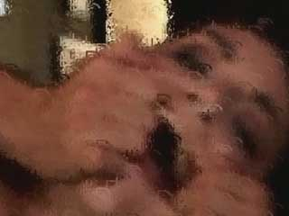 KEYWORDS: video arte, video experimental, arte ASCII...Una crítica al feminismo extremo, pues llevada a su extremo, cualquier tendencia se transforma en su opuesto. En el caso presente se trata de una secuencia de una película pornográfica, trabajada con la técnica del arte ASCII. La imagen se conforma con las letras del discurso de la actriz, que bajo la idea de la libertad sexual femenina, se deja usar como un objeto para la diversión masculina. |
|
2011 |
|
"Eternal Rebuild of a Perfect Bug"
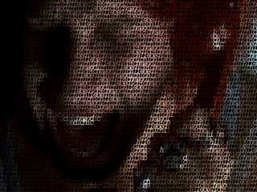 KEYWORDS: fotografía, arte ASCII, films, movies...Esta serie convida al saqueo, al pastiche, a la apropiación, al canibalismo… de una cultura de la que dependemos desesperadamente. Nosotros, que nunca hemos podido ni querido pagar una película original, nos hemos formado a través de sus fotogramas. Son estas imágenes, y la poesía latente en las mismas, incluso en las más prosaicas y pedestres, las que son aprovechadas por las piezas que componen esta serie (una serie eterna como el nombre lo indica) para construir otras tantas instantáneas de arte ASCII. |
|
"Paisaje con Mujer"
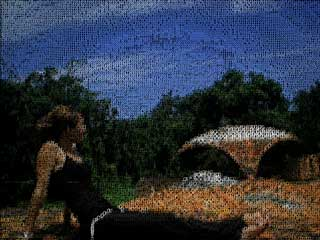 KEYWORDS: fotografía, arte ASCII, epoetry...Una serie de fotos tomadas en la facultad de circo, de la Universidad de las Artes de Cuba, ISA, en las que posa una alumna de esa especialidad. Esta facultad ha sido abandonada a su suerte, convirtiéndose en una ruina primero, y luego siendo arrastrada por el río que la flanquea. La nostalgia de las ruinas sólo puede ser comparada a la sorpresa de una alumna que nunca pudo explorar con anterioridad el espacio de su perdida escuela. |
|
"Psychology is a Nature's Glitch"
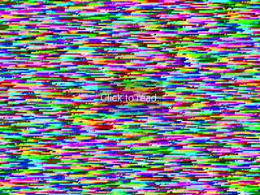 KEYWORDS: hacker art, arte conceptual, software art...Usando el texto "La Psicología y el Enigma del Estilo", de Gombrich, se genera una imagen (al sustituir la información de color por las letras). Luego esta imagen se presenta a pantalla completa y el texto es leído en alta voz por el ordenador. Cuando el usuario hace click sobre la imagen, el software retoma la lectura en el punto equivalente al texto. Esta obra destaca con su visualidad glitch que la psicología humana es un fenómeno emergente en la naturaleza, una suerte de error tecnológico-natural. |
|
"Cambio de Paradigma: Negativizaciones"
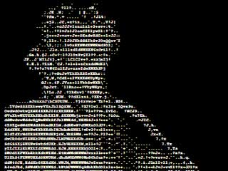 fotografía, arte ASCII, epoetry...Un serie de fotografías tomadas en estudio, que luego fueron procesadas con la técnica del arte ASCII. En vez de imprimirlas sobre papel fotográfico, se imprimen en papel de oficina. Luego este papel se usa como negativo para positivar el papel fotográfico. De esta forma se logra una visualidad que mezcla el mundo digital con el analógico. |
|
"Universal Image"
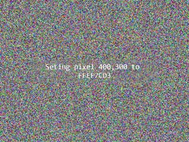 hacker art, arte conceptual, software art...Se trata de un programa que realiza todas las combinaciones posibles de pixeles en el espacio de la pantalla. De esta forma, por un simple mecanismo de fuerza bruta se generan todas las imágenes que son susceptibles de ser digitalizadas. El tiempo necesario para que este proceso termine es abrumador, por lo que esperar que verdaderamente emerjan las imágenes es ingenuo. El ejercicio que la pieza propone es de índole conceptual, o sea, la consideración de la posibilidad de que cualquier cosa que se pueda imaginar (por absurda que sea) aparezca eventualmente en la pantalla de manera necesaria (dado suficiente tiempo de procesamiento). |
|
2012 |
|
"Retratos I"
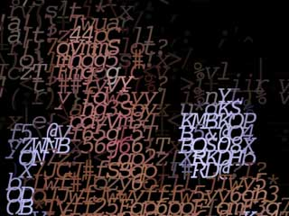 KEYWORDS: fotografía, arte ASCII...Una serie de retratos tomados a personas casuales, siempre bajo el paradigma del street photography. Luego han sido procesados con la técnica del arte ASCII. Esta primera serie consta de 7 piezas. Al igual que con la serie anterior el software con el que se generan las imágenes fue desarrollado por el propio artista.
|
|
"Deadroid" (ver obra)
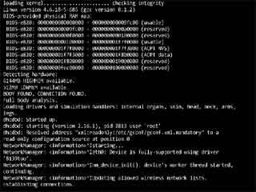 KEYWORDS: hacker art, arte conceptual, software art...Un texto animado que muestra el log de errores de un ordenador que posee consciencia. La acción se desarrolla mientras se le aplica el test de Turin. Este texto explora la ciencia ficción desde su construcción más contemporánea, y pretende emular y trasmitir al lector cierta epifanía respecto a la técnica. |
|
"Relatividad"
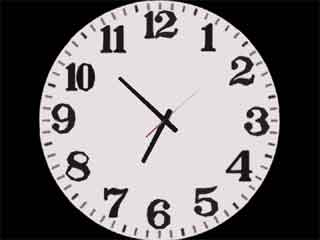 KEYWORDS: hacker art, arte conceptual, software art...Un reloj que ha sido analíticamente dividido en tres esferas que se mueven de manera concéntrica. Cada una de estas esferas expresa los segundos, minutos y horas, y se mueven al paso del tiempo real. Tanto el horario, como el minutero como el segundero, permanecen fijos. Se trata de una interpretación espacial del tiempo, y su confrontación con el tiempo psicológico o mecánico, de nuestra experiencia cotidiana. |
|
"Serie Erótica"
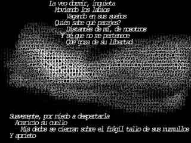 KEYWORDS:fotografía, arte ASCII...Una serie realizada a partir de fotografías eróticas a las que se les añade un poema de la misma naturaleza. La serie consta de 7 obras cuyo orden responde a la narrativa desplegada en el texto. |
|
"Chambre Noire"
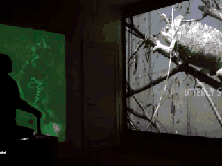 KEYWORDS: processing, webcam, light sensitive wall, torchlights...Instalación interactiva parte de la exposición Wunderblock IKM. Interkulturelt Museum, Oslo. En colaboración con la artista Andrea Sunder-Plassmann. La pieza consiste de una serie de videos sobre los cuales se proyecta ademas algunas palabras. Estas palabras cambian de acuerdo a la interacción del espectador, que con una linterna láser dibuja sobre una pared fosforescente. El software de la obra detecta los trazos del espectador en la pared, y de acuerdo a la posicion de los mismos en la pared, sustituye la palabra que se proyecta. |
|
2012 |
|
"The Fappening"
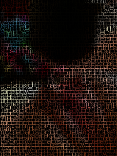 KEYWORDS: fotografía, arte ASCII...Una serie de obras basadas en las fotos que se filtraron de las cuentas privadas de las celebridades. Las imágenes están creadas a partir de textos de M. Heidegger. |
|
"Intimacy"
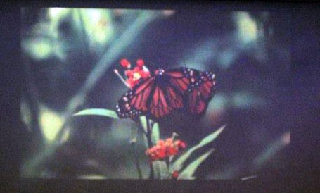 KEYWORDS: processing, interactivity, projection.Instalación interactiva en colaboración con la artista Andrea Sunder-Plassmann. La obra consiste de la proyección de un video donde una mariposa aletea frenéticamente. La velocidad del movimiento se controla al acariciar un coco, lo que logra que la mariposa tenga movimientos más reposados. Esta pieza explora la sensibilidad y la importancia de la intimidad en el espíritu humano. Pretende "enseñar" al espectador a acariciar la fragilidad del alma. |